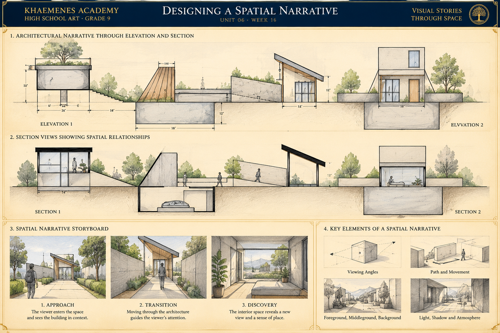

Spatial hierarchy
Organize foreground, middleground and background; use overlap, scale and contrast to guide the eye toward an intentional focal point.
KHAEMENES ACADEMY · HIGH SCHOOL ART · GRADE 9
Unit 06 · Space, Perspective and Designed Environments · Culminating Studio
How can an artist use viewpoint, depth, scale, light and composition to tell a clear visual story through a designed environment?
Bring together Week 14's spatial construction and Week 15's multiple viewpoints. The culminating work is a three-panel spatial storyboard plus one developed original scene, supported by research, critique and documented revision.
Organize foreground, middleground and background; use overlap, scale and contrast to guide the eye toward an intentional focal point.
Choose one- or two-point construction as appropriate. Keep eye level, ground contact and object relationships coherent as the scene or camera position changes.
Let architecture, paths, light, placement and visual rhythm suggest an event or change. Distinguish what the image shows from what a viewer may infer.
Panel 1 · Establish: Draw a wide exterior view of a small gallery, with a clear entrance and foreground pathway. Use a two-point construction if the building corner is visible. Panel 2 · Approach: Move the viewpoint closer; overlap a bench with the doorway and position a figure on the ground plane. Panel 3 · Discover: Show the interior looking toward an artwork using a one-point corridor if the view is straight ahead. Keep doorway proportions and the viewer's route plausible across panels. Final scene: Choose the strongest panel, refine its light and value hierarchy, then compare the original and revised composition.
A storyboard can change viewpoints between panels. Perspective consistency means each panel is internally coherent and transitions are understandable, not that every panel shares one vanishing point.
Study this original Academy architectural narrative, moving from measured elevations and sectional views to a three-panel visual story. Notice how the built environment guides a person's route, how openings frame what is visible, and how changes in viewpoint reveal new spatial information. Architectural elevations and sections describe different aspects of a design; they are not interchangeable with perspective views.

1 · Elevation: identify two visible building faces or features and explain what their exterior views reveal. 2 · Section: locate a cut-through view and describe how it shows interior space or changes in ground level. 3 · Approach: identify the establishing viewpoint and the route toward the entrance. 4 · Transition: explain how walls, openings, overlap and a figure guide movement. 5 · Discovery: describe the new information revealed by the interior view. 6 · Revision: make your own three-panel thumbnail sequence, mark a focal point in each, and correct one issue of scale, ground contact, or spatial continuity. Archive the annotated studies with your portfolio evidence.
Revisit the Week 14 gallery and Week 15 corner-building studies. Mark foreground, middleground, background, focal point, horizon and viewer route. Write three observable facts and one interpretation, keeping them separate.
Choose a story prompt: arrival at a gallery, discovering a quiet library, or entering a community garden. Create three distinct thumbnails: a wide establishing view, a mid-distance action view, and a close view of a meaningful detail. Annotate the intended focal point and perspective approach for each.
Select a viewpoint and use one- or two-point perspective where appropriate. Build a floor or ground plane, three spatial layers, and at least two overlapping forms. Add one human-scale reference. Use proportion, relative size and negative space to test whether the setting reads clearly.
Use Week 12's light-and-shadow distinctions to organize value and emphasis. Compare your first and revised versions; correct two specific issues involving convergence, focal hierarchy, figure placement or shadow direction. Ask a reviewer what they notice first and whether the spatial sequence is legible.
Compare two credited works that communicate narrative through architecture, landscape, interior or staged space. Use reliable artist or museum records and cite title, creator, date if known, medium, URL and access date. Assemble your three-panel storyboard and one developed final scene. Write a 150–250 word reflection on spatial decisions, alternatives and limitations.
Archive the first sketches and the final work in your Week 01 portfolio. Label all panels with viewpoint, purpose, medium and date.
Evidence is stored locally in this browser, not in an authenticated Academy gradebook. Export a backup and verify learner identity before sharing.
Spatial construction and coherent viewpoints (25) · Narrative sequence and visual hierarchy (25) · Original developed scene and light/value (20) · Critique and revision evidence (15) · Research, reflection and portfolio documentation (15). Educator review is separate from formative practice.
Five randomized questions are drawn from fifteen lesson-aligned items. Four correct meets the 80% practice target. Submitted answers lock and retakes begin a fresh attempt. Browser-local results do not independently authorize Academy progression.
Compare your Week 14 gallery corridor, Week 15 architectural corner, and Week 16 spatial narrative. Identify one measurable improvement in construction, one improvement in expressive composition, and one skill to revisit. Keep the three projects together as evidence of progressive learning.
Return to Unit 06 overview